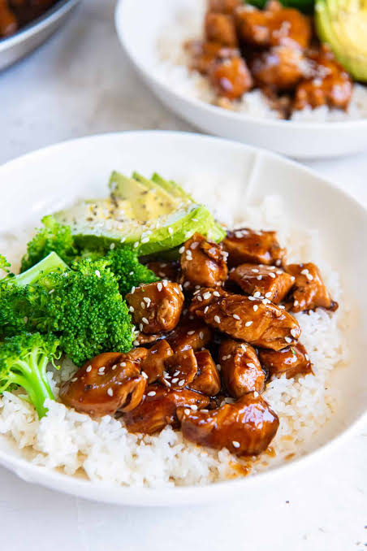

Home
Pernil Pork Food Recipe!

Description: Tender, juicy chicken bites are seared to
perfection and coated in a glossy, homemade sweet and savory glaze. Quick
to make and bursting with authentic flavor, it's the ultimate weeknight
staple to serve over a bowl of steaming rice.
Ingredients
-
1 1/2 cups uncooked sushi riceor short grain white rice, rinsed and
drained
- 2 cups boiling water
- 3 cups cooked chicken, cut into bite-sized pieces
-
1 (12 to 14.4 ounce) bag frozen stir fry vegetables, cooked according to
package directions
-
1 cup teriyaki marinade and sauce,plus more for serving, such as Soy
Vay® Veri Veri Teriyaki® Marinade and Sauce
- sliced green onions and sesame seeds, for garnish
- Sriracha sauce and soy sauce, for serving (optional)
Steps
-
Preheat the oven to 350 degrees F (176 degrees C). Lightly grease a
9x13-inch (3-quart) baking dish with cooking spray.
-
Place rinsed and drained rice in the prepared baking dish. Carefully
pour boiling water over rice. Cover the dish tightly with foil.
-
Bake in the preheated oven until water is absorbed and rice is tender,
20 minutes.
-
Remove from the oven and let stand, covered, for 5 minutes. Uncover and
fluff rice with a fork.
-
Stir in chicken, cooked vegetables, and teriyaki sauce until well
combined.
-
Bake, uncovered, until casserole is heated through, about 15 minutes.
-
Garnish with green onions and sesame seeds. Serve with additional
teriyaki sauce and Sriracha, if desired.